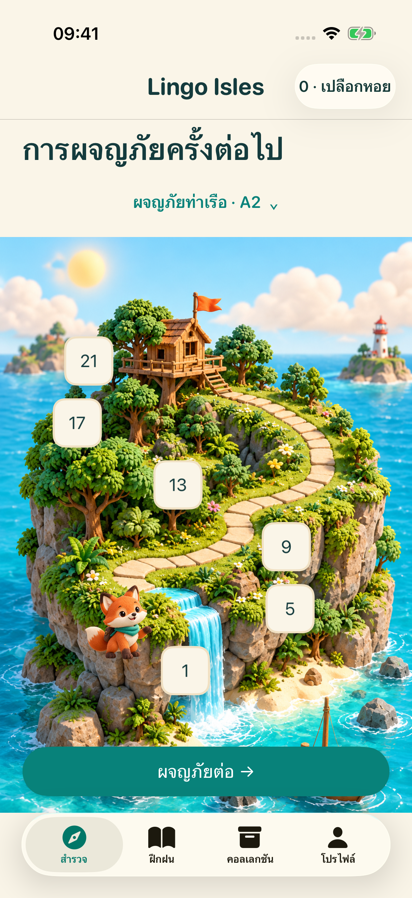
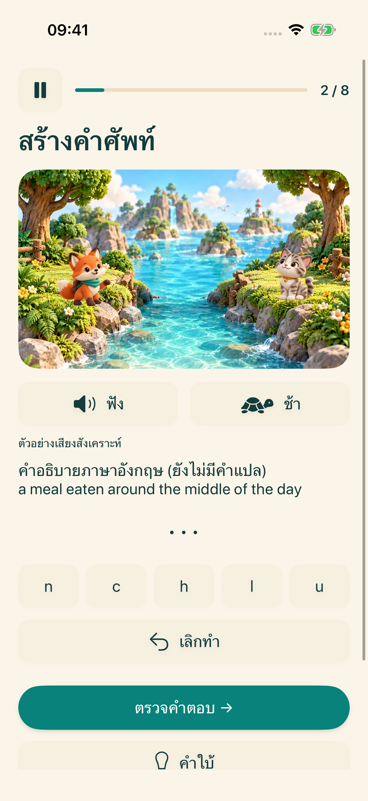
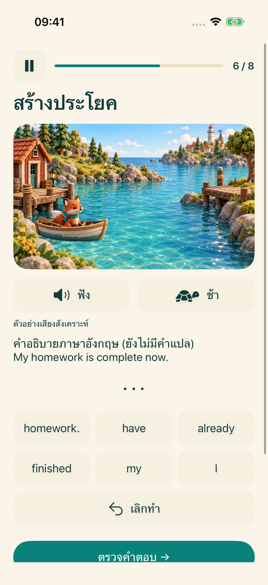
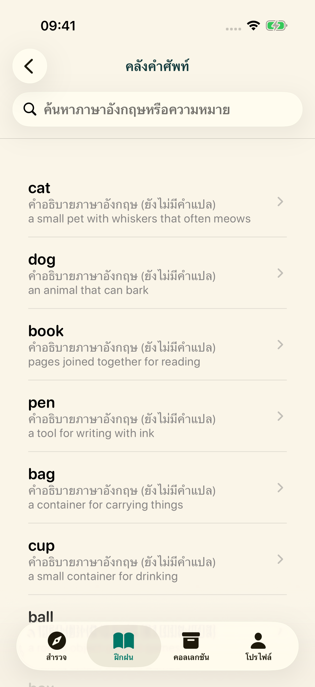

เกาะถัดไปกำลังรอคุณอยู่
เลือกระดับการเรียนรู้ แล้วเดินทางไปกับแบบฝึกภาษาอังกฤษสั้น ๆ
ออกสำรวจเกาะแห่งการเรียนรู้ทั้งสี่ ฟัง สร้างคำ เรียงประโยค และลองเปล่งเสียงของคุณเอง ค่อย ๆ ค้นพบสิ่งใหม่ทีละนิด
สำรวจการผจญภัยกำลังเตรียมเปิดตัวบน iPhone และ iPad


เลือกระดับการเรียนรู้ แล้วเดินทางไปกับแบบฝึกภาษาอังกฤษสั้น ๆ

ฟังเสียงจากระบบ แล้วเรียงตัวอักษรเพื่อฝึกสะกดคำภาษาอังกฤษ

เรียงคำให้เป็นลำดับ แล้วเรียนรู้ว่าประโยคภาษาอังกฤษประกอบกันอย่างไร

สำรวจคลังคำศัพท์ บันทึกคำโปรด และกลับมาทบทวนสิ่งที่เรียนรู้

บันทึกเสียง ฟังซ้ำ แล้วลองอีกครั้ง อุปกรณ์ที่รองรับสามารถเลือกใช้การถอดเสียงเป็นข้อความบนอุปกรณ์ได้ นี่คือการฝึกพูด ไม่ใช่การให้คะแนนการออกเสียง
หน้าจอรองรับ 16 ภาษา คำอธิบายการเรียนรู้มีภาษาอังกฤษและจีนตัวย่อ สำหรับภาษาอื่นที่ยังไม่มีคำแปล จะแสดงคำอธิบายภาษาอังกฤษพร้อมระบุไว้อย่างชัดเจน
เนื้อหาการเรียนรู้และความคืบหน้าจัดเก็บไว้บนอุปกรณ์ของคุณ ไม่จำเป็นต้องมีบัญชีหรือใช้การซิงค์บนคลาวด์ที่ดำเนินการโดยผู้พัฒนา ทรัพยากรเสียงขึ้นอยู่กับอุปกรณ์ ส่วนบริการโฆษณาและความเป็นส่วนตัวต้องเชื่อมต่อเครือข่าย
โปรไฟล์ที่อายุต่ำกว่า 18 ปีหรือยังไม่ระบุช่วงอายุจะไม่เริ่มกระบวนการโฆษณา สำหรับผู้ใหญ่ โฆษณาขึ้นอยู่กับตัวเลือกความเป็นส่วนตัวและความพร้อมให้บริการ การดูโฆษณาเพื่อรับรางวัลเป็นทางเลือก